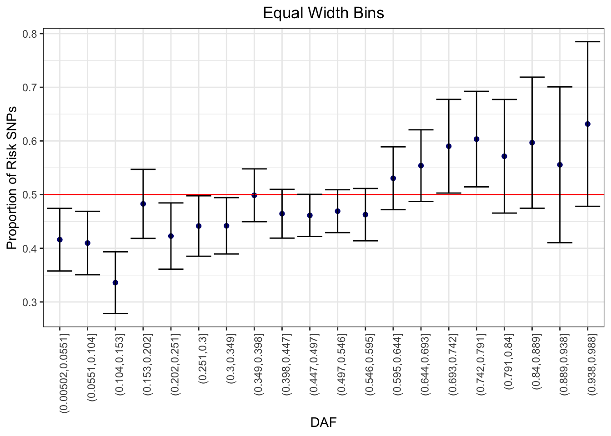
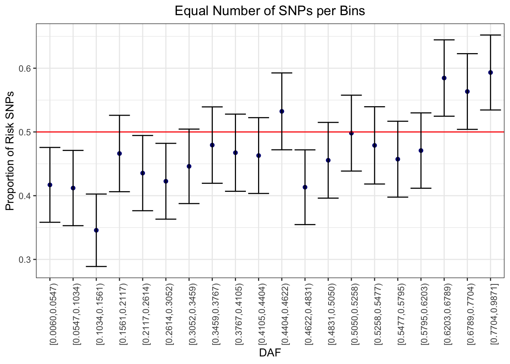
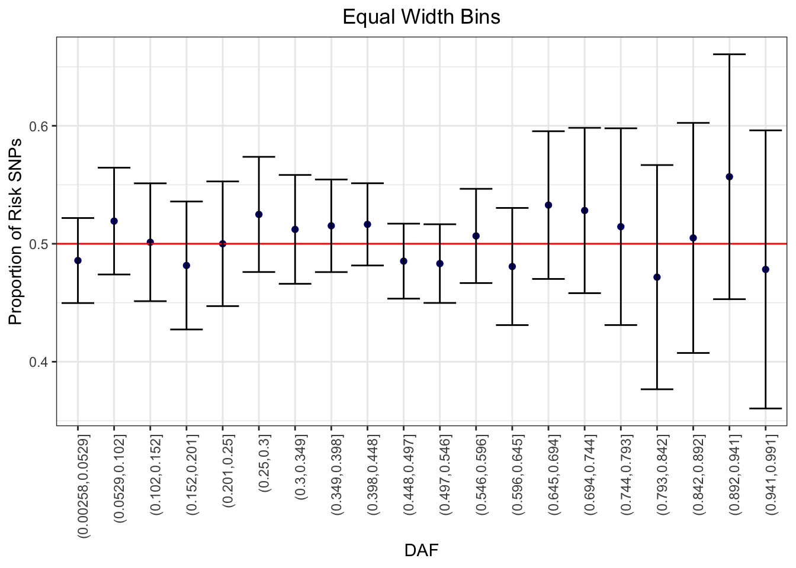
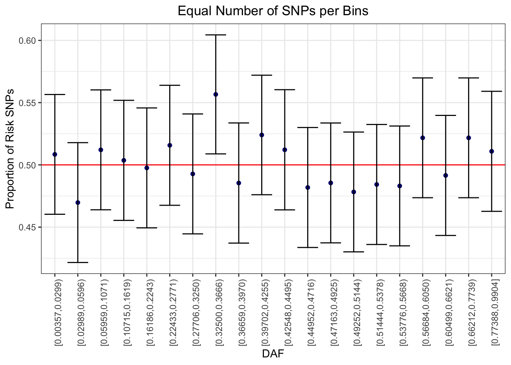
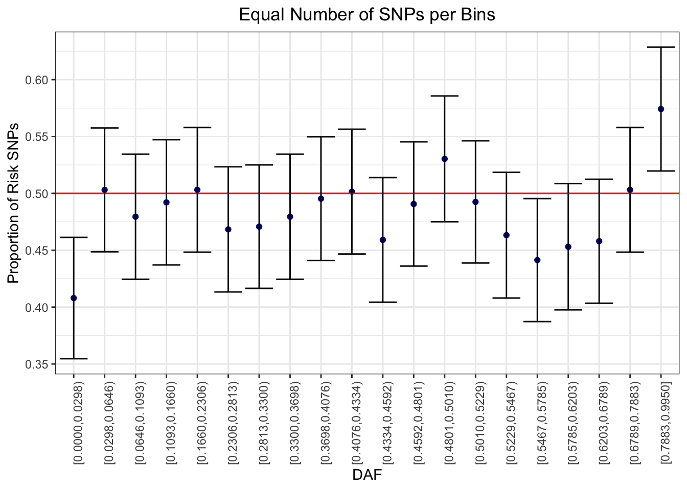
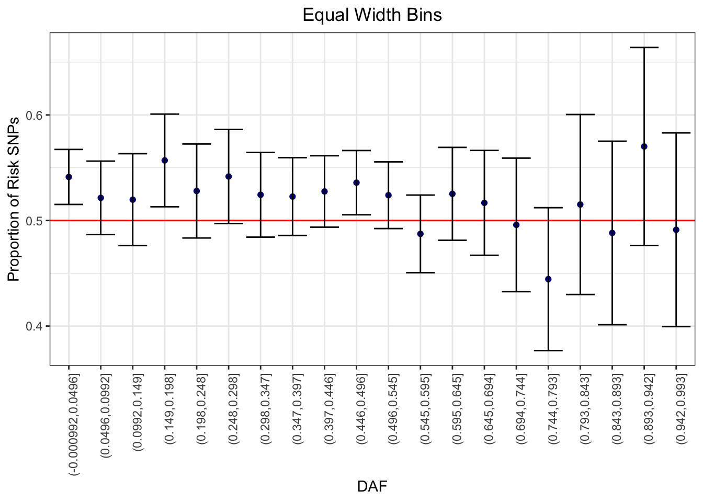
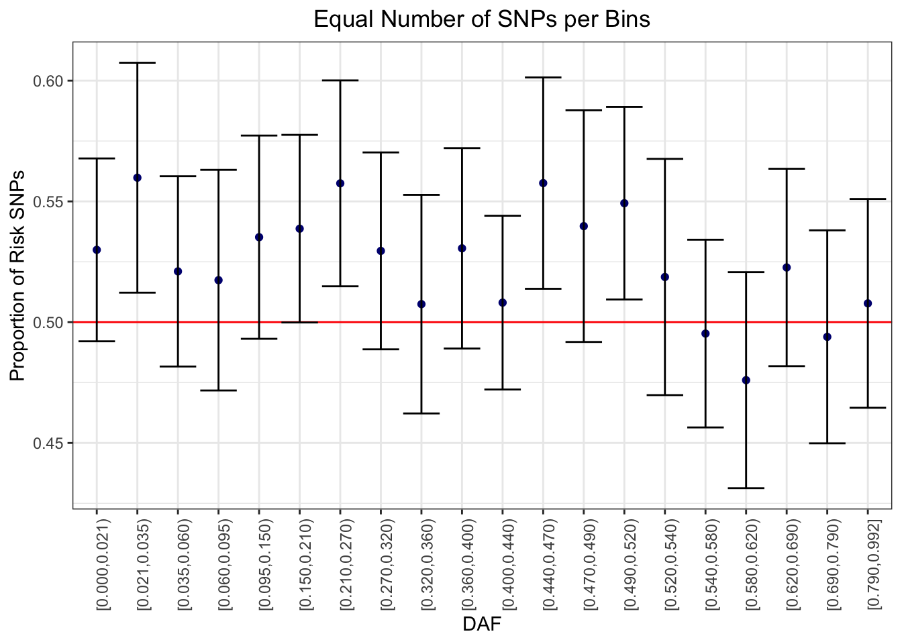
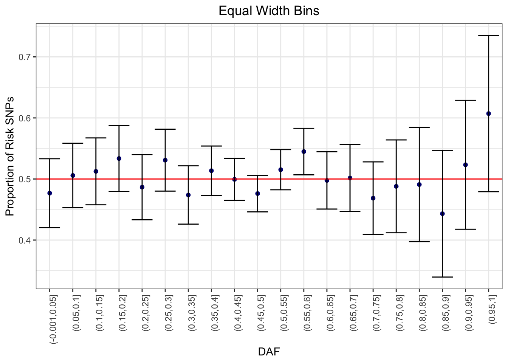
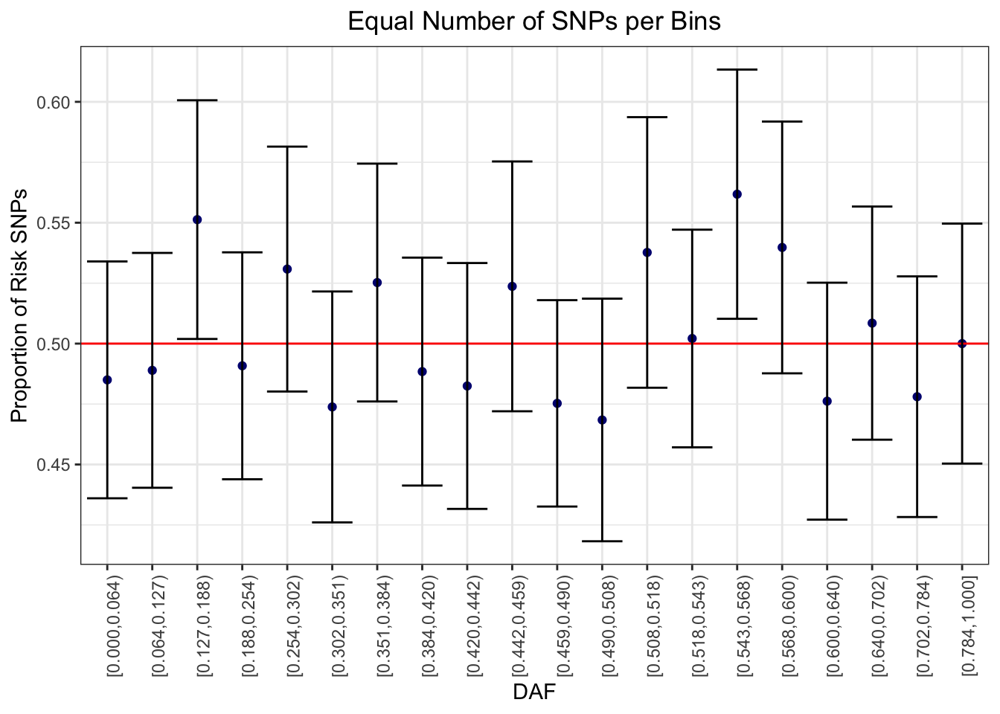

Last updated: 2020-03-24
Checks: 7 0
Knit directory: infer_mutational_bias/analysis/
This reproducible R Markdown analysis was created with workflowr (version 1.6.0). The Checks tab describes the reproducibility checks that were applied when the results were created. The Past versions tab lists the development history.
Great! Since the R Markdown file has been committed to the Git repository, you know the exact version of the code that produced these results.
Great job! The global environment was empty. Objects defined in the global environment can affect the analysis in your R Markdown file in unknown ways. For reproduciblity it’s best to always run the code in an empty environment.
The command set.seed(20191108) was run prior to running the code in the R Markdown file. Setting a seed ensures that any results that rely on randomness, e.g. subsampling or permutations, are reproducible.
Great job! Recording the operating system, R version, and package versions is critical for reproducibility.
Nice! There were no cached chunks for this analysis, so you can be confident that you successfully produced the results during this run.
Great job! Using relative paths to the files within your workflowr project makes it easier to run your code on other machines.
Great! You are using Git for version control. Tracking code development and connecting the code version to the results is critical for reproducibility. The version displayed above was the version of the Git repository at the time these results were generated.
Note that you need to be careful to ensure that all relevant files for the analysis have been committed to Git prior to generating the results (you can use wflow_publish or wflow_git_commit). workflowr only checks the R Markdown file, but you know if there are other scripts or data files that it depends on. Below is the status of the Git repository when the results were generated:
Ignored files:
Ignored: .DS_Store
Ignored: .Rhistory
Ignored: .Rproj.user/
Ignored: .snakemake/conda-archive/
Ignored: .snakemake/conda/
Ignored: .snakemake/locks/
Ignored: .snakemake/shadow/
Ignored: .snakemake/singularity/
Ignored: analysis/.DS_Store
Ignored: code/.DS_Store
Ignored: code/parse_gwas_atlas/.DS_Store
Ignored: code/parse_gwas_atlas_nonsig/.DS_Store
Ignored: data/.ipynb_checkpoints/
Ignored: data/1000G_20101123_v3_GIANT_chr1_23_minimacnamesifnotRS_CEU_MAF0.01/
Ignored: data/47UKBB/
Ignored: data/ALL.chr1.phase3_shapeit2_mvncall_integrated_v5a.20130502.genotypes.EUR/
Ignored: data/BBJ/
Ignored: data/GWAS_ATLAS/
Ignored: data/STRAT/
Ignored: data/UKBB/
Ignored: output/.DS_Store
Ignored: output/47UKBB/
Ignored: output/BBJ/.DS_Store
Ignored: output/GWAS_ATLAS/
Ignored: output/STRAT/
Ignored: output/UKBB/.DS_Store
Untracked files:
Untracked: .snakemake/log/2020-03-23T164719.122778.snakemake.log
Untracked: .snakemake/log/2020-03-23T164841.172341.snakemake.log
Untracked: .snakemake/log/2020-03-23T165052.235224.snakemake.log
Untracked: .snakemake/log/2020-03-23T173201.671245.snakemake.log
Untracked: .snakemake/log/2020-03-23T190924.512591.snakemake.log
Untracked: .snakemake/log/2020-03-23T194341.864454.snakemake.log
Untracked: .snakemake/log/2020-03-24T091905.302205.snakemake.log
Untracked: .snakemake/log/2020-03-24T092201.882781.snakemake.log
Untracked: .snakemake/log/2020-03-24T092404.171989.snakemake.log
Untracked: .snakemake/log/2020-03-24T092428.802361.snakemake.log
Untracked: .snakemake/log/2020-03-24T093017.568005.snakemake.log
Untracked: .snakemake/log/2020-03-24T093241.050903.snakemake.log
Untracked: .snakemake/log/2020-03-24T093254.384314.snakemake.log
Untracked: .snakemake/log/2020-03-24T093258.136407.snakemake.log
Untracked: .snakemake/log/2020-03-24T093449.542770.snakemake.log
Untracked: .snakemake/log/2020-03-24T111104.620227.snakemake.log
Untracked: .snakemake/log/2020-03-24T111633.863041.snakemake.log
Untracked: .snakemake/log/2020-03-24T111701.823844.snakemake.log
Untracked: .snakemake/metadata/b3V0cHV0L0dXQVNfQVRMQVMvZXZvX2FkZGVkL0NBRF8zOTI1LTAuMDAwMV9ldm8udHh0
Untracked: .snakemake/metadata/b3V0cHV0L0dXQVNfQVRMQVMvZXZvX2FkZGVkL1QyRF80MDg1LTAuMDAwMV9ldm8udHh0
Untracked: .snakemake/metadata/b3V0cHV0L0dXQVNfQVRMQVMvZXZvX2FkZGVkL1VDXzIwMzAtMC4wMDAxX2V2by50eHQ=
Untracked: .snakemake/metadata/b3V0cHV0L0dXQVNfQVRMQVMvZXZvX2FkZGVkL2hlaWdodF8xNDItMC4wMDAxX2V2by50eHQ=
Untracked: .snakemake/metadata/b3V0cHV0L0dXQVNfQVRMQVMvZXZvX2FkZGVkL3NjaGl6b3BocmVuaWFfMzk4Mi0wLjAwMDFfZXZvLnR4dA==
Untracked: .snakemake/metadata/b3V0cHV0L0dXQVNfQVRMQVMvcGFyc2VkX2d3YXMvQ0FEXzM5MjVfMC4wMDAxX3BhcnNlZC50eHQ=
Untracked: .snakemake/metadata/b3V0cHV0L0dXQVNfQVRMQVMvcGFyc2VkX2d3YXMvVDJEXzQwODVfMC4wMDAxX3BhcnNlZC50eHQ=
Untracked: .snakemake/metadata/b3V0cHV0L0dXQVNfQVRMQVMvcGFyc2VkX2d3YXMvVUNfMjAzMF8wLjAwMDFfcGFyc2VkLnR4dA==
Untracked: .snakemake/metadata/b3V0cHV0L0dXQVNfQVRMQVMvcGFyc2VkX2d3YXMvaGVpZ2h0XzE0Ml8wLjAwMDFfcGFyc2VkLnR4dA==
Untracked: .snakemake/metadata/b3V0cHV0L0dXQVNfQVRMQVMvcGFyc2VkX2d3YXMvc2NoaXpvcGhyZW5pYV8zOTgyXzAuMDAwMV9wYXJzZWQudHh0
Untracked: .snakemake/metadata/b3V0cHV0L0dXQVNfQVRMQVMvcHJ1bmVkL0NBRF8zOTI1XzAuMDAwMS5wcnVuZS5pbg==
Untracked: .snakemake/metadata/b3V0cHV0L0dXQVNfQVRMQVMvcHJ1bmVkL1QyRF80MDg1XzAuMDAwMS5wcnVuZS5pbg==
Untracked: .snakemake/metadata/b3V0cHV0L0dXQVNfQVRMQVMvcHJ1bmVkL1VDXzIwMzBfMC4wMDAxLnBydW5lLmlu
Untracked: .snakemake/metadata/b3V0cHV0L0dXQVNfQVRMQVMvcHJ1bmVkL2hlaWdodF8xNDJfMC4wMDAxLnBydW5lLmlu
Untracked: .snakemake/metadata/b3V0cHV0L0dXQVNfQVRMQVMvcHJ1bmVkL3NjaGl6b3BocmVuaWFfMzk4Ml8wLjAwMDEucHJ1bmUuaW4=
Untracked: .snakemake/scripts/tmp7997be50.get_evolutionary_information_from_1kg_GWAS_ATLAS.py
Untracked: code/parse_gwas_atlas_nonsig/height_142.R
Untracked: code/rsID_Pos_conversion.py
Untracked: code/rsID_Pos_conversion.py~
Unstaged changes:
Modified: code/parse_gwas_atlas_nonsig/CAD_3925.R
Modified: code/parse_gwas_atlas_nonsig/T2D_4085.R
Modified: code/parse_gwas_atlas_nonsig/UC_2030.R
Modified: code/parse_gwas_atlas_nonsig/schizophrenia_3982.R
Modified: snakefile
Modified: snakefile~
Note that any generated files, e.g. HTML, png, CSS, etc., are not included in this status report because it is ok for generated content to have uncommitted changes.
These are the previous versions of the R Markdown and HTML files. If you’ve configured a remote Git repository (see ?wflow_git_remote), click on the hyperlinks in the table below to view them.
| File | Version | Author | Date | Message |
|---|---|---|---|---|
| Rmd | 18252e2 | jgblanc | 2020-03-24 | added GIANT |
| Rmd | d6eca3f | jgblanc | 2020-03-23 | added LD pruning |
| html | 9f46992 | jgblanc | 2020-03-17 | Build site. |
| Rmd | e35f161 | jgblanc | 2020-03-17 | looked for shift |
| html | 05bcd8b | jgblanc | 2020-03-17 | Build site. |
| html | 06b1b04 | jgblanc | 2020-03-17 | Build site. |
| Rmd | 71255ca | jgblanc | 2020-03-17 | looked for shift |
Truth: \[\vec{Y} = \mu + \beta_l\vec{g_l} + \beta_E\vec{E} + \vec{e}, \space \space \space \vec{e} \sim N(0, V_E)\]
Model with no PC adjustment: \[\vec{Y} = \mu + \beta_l\vec{g_l} + \vec{e}\]
Expected \(\hat{\beta}\): \[E[\hat{\beta}] = \beta_l + \beta_E cov(\vec{E}, \vec{g})\]
Model including PC1: \[\vec{Y} = \mu + \beta_l\vec{g_l} + \beta_{\vec{U_1}}\vec{U_1}+ \vec{e}\]
Expected \(\hat{\beta}\) assuming that \(\vec{U_1} = \vec{E}\): \[E[\beta_l] = \beta_l(1 - r^2(g_l,\vec{U_1}))\]
schizophrenia <- fread("../output/GWAS_ATLAS/evo_added/schizophrenia_3982-0.0001_evo.txt")
colnames(schizophrenia) <- c(colnames(schizophrenia)[1:13], "EA_Derived", "DAF", "Risk_Derived")
pruned <- fread("../output/GWAS_ATLAS/pruned/schizophrenia_3982_0.0001.prune.in", header = F)
schizophrenia <- left_join(pruned, schizophrenia, by = c("V1" = "SNP"))
dat <- schizophrenia %>% select(DAF, Risk_Derived, OR) %>% na.omit()
dat$bin <- cut(dat$DAF, 20)
df <- dat %>% group_by(bin) %>%summarise(num_snps = n(),prop_risk = (sum(Risk_Derived == 'T')/n()))
ggplot(df, aes(x=bin, y=prop_risk)) + geom_point(col = "navy") + geom_hline(yintercept = 0.5, col = "red") + theme_bw() + xlab("DAF") + ylab("Proportion of Risk SNPs") + theme(axis.text.x = element_text(angle = 90, hjust = 1)) + ggtitle("Equal Width Bins") + theme(plot.title = element_text(hjust = 0.5))
| Version | Author | Date |
|---|---|---|
| 06b1b04 | jgblanc | 2020-03-17 |
dat2 <- schizophrenia %>% select(DAF, Risk_Derived, OR) %>% na.omit()
dat2$bin <- cut2(dat$DAF, m=nrow(dat2)/20)
df2 <- dat2 %>% group_by(bin) %>%summarise(num_snps = n(),prop_risk = (sum(Risk_Derived == 'T')/n()))
ggplot(df2, aes(x=bin, y=prop_risk)) + geom_point(col = "navy") + geom_hline(yintercept = 0.5, col = "red") + theme_bw() + xlab("DAF") + ylab("Proportion of Risk SNPs") + theme(axis.text.x = element_text(angle = 90, hjust = 1)) + ggtitle("Equal Number of SNPs per Bins") + theme(plot.title = element_text(hjust = 0.5))
# Totol Fraction of Risk Derived SNPs
sum(dat$Risk_Derived == "T")/sum(dat$Risk_Derived == "T" | dat$Risk_Derived == "F")[1] 0.4547076CAD <- fread("../output/GWAS_ATLAS/evo_added/CAD_3925-0.0001_evo.txt")
colnames(CAD) <- c(colnames(CAD)[1:13], "EA_Derived", "DAF", "Risk_Derived")
pruned <- fread("../output/GWAS_ATLAS/pruned/CAD_3925_0.0001.prune.in", header = F)
CAD <- left_join(pruned, CAD, by = c("V1" = "SNP"))
dat <- CAD %>% select(DAF, Risk_Derived, `Log(OR)`) %>% na.omit()
dat$bin <- cut(dat$DAF, 20)
df <- dat %>% group_by(bin) %>%summarise(prop_risk = (sum(Risk_Derived == 'T')/n()))
ggplot(df, aes(x=bin, y=prop_risk)) + geom_point(col = "navy") + geom_hline(yintercept = 0.5, col = "red") + theme_bw() + xlab("DAF") + ylab("Proportion of Risk SNPs") + theme(axis.text.x = element_text(angle = 90, hjust = 1)) + ggtitle("Equal Width Bins") + theme(plot.title = element_text(hjust = 0.5))
| Version | Author | Date |
|---|---|---|
| 06b1b04 | jgblanc | 2020-03-17 |
dat2 <- CAD %>% select(DAF, Risk_Derived, `Log(OR)`) %>% na.omit()
dat2$bin <- cut2(dat$DAF, m=nrow(dat2)/20)
df2 <- dat2 %>% group_by(bin) %>%summarise(num_snps = n(),prop_risk = (sum(Risk_Derived == 'T')/n()))
ggplot(df2, aes(x=bin, y=prop_risk)) + geom_point(col = "navy") + geom_hline(yintercept = 0.5, col = "red") + theme_bw() + xlab("DAF") + ylab("Proportion of Risk SNPs") + theme(axis.text.x = element_text(angle = 90, hjust = 1)) + ggtitle("Equal Number of SNPs per Bins") + theme(plot.title = element_text(hjust = 0.5))
sum(dat$Risk_Derived == "T")/sum(dat$Risk_Derived == "T" | dat$Risk_Derived == "F")[1] 0.4995684UC <- fread("../output/GWAS_ATLAS/evo_added/UC_2030-0.0001_evo.txt")
colnames(UC) <- c(colnames(UC)[1:13], "EA_Derived", "DAF", "Risk_Derived")
pruned <- fread("../output/GWAS_ATLAS/pruned/UC_2030_0.0001.prune.in", header = F)
UC <- left_join(pruned, UC, by = c("V1" = "SNP"))
dat <- UC %>% select(DAF, Risk_Derived, BETA) %>% na.omit() %>% filter(abs(BETA) <= 0.0005)
dat$bin <- cut(dat$DAF, 20)
df <- dat %>% group_by(bin) %>%summarise(prop_risk = (sum(Risk_Derived == 'T')/n()))
ggplot(df, aes(x=bin, y=prop_risk)) + geom_point(col = "navy") + geom_hline(yintercept = 0.5, col = "red") + theme_bw() + xlab("DAF") + ylab("Proportion of Risk SNPs") + theme(axis.text.x = element_text(angle = 90, hjust = 1)) + ggtitle("Equal Width Bins") + theme(plot.title = element_text(hjust = 0.5))
| Version | Author | Date |
|---|---|---|
| 06b1b04 | jgblanc | 2020-03-17 |
dat2 <- UC %>% select(DAF, Risk_Derived, BETA) %>% na.omit()
dat2$bin <- cut2(dat$DAF, m=nrow(dat2)/20)
df2 <- dat2 %>% group_by(bin) %>%summarise(num_snps = n(),prop_risk = (sum(Risk_Derived == 'T')/n()))
ggplot(df2, aes(x=bin, y=prop_risk)) + geom_point(col = "navy") + geom_hline(yintercept = 0.5, col = "red") + theme_bw() + xlab("DAF") + ylab("Proportion of Risk SNPs") + theme(axis.text.x = element_text(angle = 90, hjust = 1)) + ggtitle("Equal Number of SNPs per Bins") + theme(plot.title = element_text(hjust = 0.5))
sum(dat$Risk_Derived == "T")/sum(dat$Risk_Derived == "T" | dat$Risk_Derived == "F")[1] 0.4768614T2D <- fread("../output/GWAS_ATLAS/evo_added/T2D_4085-0.0001_evo.txt")
colnames(T2D) <- c(colnames(T2D)[1:13], "EA_Derived", "DAF", "Risk_Derived")
pruned <- fread("../output/GWAS_ATLAS/pruned/T2D_4085_0.0001.prune.in", header = F)
T2D <- left_join(pruned, T2D, by = c("V1" = "SNP"))
dat <- T2D %>% select(DAF, Risk_Derived, BETA) %>% na.omit() %>% filter(abs(BETA) <= 0.0001)
dat$bin <- cut(dat$DAF, 20)
df <- dat %>% group_by(bin) %>%summarise(prop_risk = (sum(Risk_Derived == 'T')/n()), )
ggplot(df, aes(x=bin, y=prop_risk)) + geom_point(col = "navy") + geom_hline(yintercept = 0.5, col = "red") + theme_bw() + xlab("DAF") + ylab("Proportion of Risk SNPs") + theme(axis.text.x = element_text(angle = 90, hjust = 1)) + ggtitle("Equal Width Bins") + theme(plot.title = element_text(hjust = 0.5))
| Version | Author | Date |
|---|---|---|
| 06b1b04 | jgblanc | 2020-03-17 |
dat2 <- T2D %>% select(DAF, Risk_Derived, BETA) %>% na.omit()
dat2$bin <- cut2(dat$DAF, m=nrow(dat2)/20)
df2 <- dat2 %>% group_by(bin) %>%summarise(num_snps = n(),prop_risk = (sum(Risk_Derived == 'T')/n()))
ggplot(df2, aes(x=bin, y=prop_risk)) + geom_point(col = "navy") + geom_hline(yintercept = 0.5, col = "red") + theme_bw() + xlab("DAF") + ylab("Proportion of Risk SNPs") + theme(axis.text.x = element_text(angle = 90, hjust = 1)) + ggtitle("Equal Number of SNPs per Bins") + theme(plot.title = element_text(hjust = 0.5))
sum(dat$Risk_Derived == "T")/sum(dat$Risk_Derived == "T" | dat$Risk_Derived == "F")[1] 0.5190252height <- fread("../output/GWAS_ATLAS/evo_added/height_142-0.0001_evo.txt")
colnames(height) <- c(colnames(height)[1:13], "EA_Derived", "DAF", "Risk_Derived")
pruned <- fread("../output/GWAS_ATLAS/pruned/height_142_0.0001.prune.in", header = F)
height <- left_join(pruned, height, by = c("V1" = "SNP"))
dat <- height %>% select(DAF, Risk_Derived, BETA) %>% na.omit() %>% filter(abs(BETA) <= 0.0001)
dat$bin <- cut(dat$DAF, 20)
df <- dat %>% group_by(bin) %>%summarise(prop_risk = (sum(Risk_Derived == 'T')/n()), )
ggplot(df, aes(x=bin, y=prop_risk)) + geom_point(col = "navy") + geom_hline(yintercept = 0.5, col = "red") + theme_bw() + xlab("DAF") + ylab("Proportion of Risk SNPs") + theme(axis.text.x = element_text(angle = 90, hjust = 1)) + ggtitle("Equal Width Bins") + theme(plot.title = element_text(hjust = 0.5))
dat2 <- height %>% select(DAF, Risk_Derived, BETA) %>% na.omit()
dat2$bin <- cut2(dat$DAF, m=nrow(dat2)/20)
df2 <- dat2 %>% group_by(bin) %>%summarise(num_snps = n(),prop_risk = (sum(Risk_Derived == 'T')/n()))
ggplot(df2, aes(x=bin, y=prop_risk)) + geom_point(col = "navy") + geom_hline(yintercept = 0.5, col = "red") + theme_bw() + xlab("DAF") + ylab("Proportion of Risk SNPs") + theme(axis.text.x = element_text(angle = 90, hjust = 1)) + ggtitle("Equal Number of SNPs per Bins") + theme(plot.title = element_text(hjust = 0.5))
sum(dat$Risk_Derived == "T")/sum(dat$Risk_Derived == "T" | dat$Risk_Derived == "F")[1] 0.5086622
sessionInfo()R version 3.6.2 (2019-12-12)
Platform: x86_64-apple-darwin15.6.0 (64-bit)
Running under: macOS High Sierra 10.13.6
Matrix products: default
BLAS: /Library/Frameworks/R.framework/Versions/3.6/Resources/lib/libRblas.0.dylib
LAPACK: /Library/Frameworks/R.framework/Versions/3.6/Resources/lib/libRlapack.dylib
locale:
[1] en_US.UTF-8/en_US.UTF-8/en_US.UTF-8/C/en_US.UTF-8/en_US.UTF-8
attached base packages:
[1] stats graphics grDevices utils datasets methods base
other attached packages:
[1] Hmisc_4.3-1 Formula_1.2-3 survival_3.1-8 lattice_0.20-38
[5] ggplot2_3.2.1 data.table_1.12.8 dplyr_0.8.4 workflowr_1.6.0
loaded via a namespace (and not attached):
[1] tidyselect_1.0.0 xfun_0.12 purrr_0.3.3
[4] splines_3.6.2 vctrs_0.2.3 colorspace_1.4-1
[7] htmltools_0.4.0 yaml_2.2.1 base64enc_0.1-3
[10] rlang_0.4.4 later_1.0.0 pillar_1.4.3
[13] foreign_0.8-72 glue_1.3.1 withr_2.1.2
[16] RColorBrewer_1.1-2 jpeg_0.1-8.1 lifecycle_0.1.0
[19] stringr_1.4.0 munsell_0.5.0 gtable_0.3.0
[22] htmlwidgets_1.5.1 evaluate_0.14 labeling_0.3
[25] latticeExtra_0.6-29 knitr_1.28 httpuv_1.5.2
[28] htmlTable_1.13.3 Rcpp_1.0.3 acepack_1.4.1
[31] promises_1.1.0 scales_1.1.0 backports_1.1.5
[34] checkmate_2.0.0 farver_2.0.3 fs_1.3.1
[37] gridExtra_2.3 png_0.1-7 digest_0.6.25
[40] stringi_1.4.6 grid_3.6.2 rprojroot_1.3-2
[43] tools_3.6.2 magrittr_1.5 lazyeval_0.2.2
[46] tibble_2.1.3 cluster_2.1.0 crayon_1.3.4
[49] whisker_0.4 pkgconfig_2.0.3 Matrix_1.2-18
[52] rstudioapi_0.11 assertthat_0.2.1 rmarkdown_2.1
[55] R6_2.4.1 rpart_4.1-15 nnet_7.3-12
[58] git2r_0.26.1 compiler_3.6.2